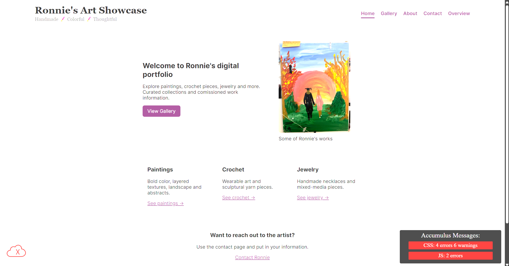

Peer Review 1
Flowers, Josiah

https://webpages.charlotte.edu/jflowe27/itis3135/project/index.html
- Your review covers the correct page and reflects navigation through the home page and main links.
- File and folder naming is clear and consistent.
- Design
- The site title with your name is easy to read and provides clear identification.
- Navigation labels are simple and accurately match their pages.
- Headings are organized in short, readable groups that assist both visitors and screen readers.
- CRAP
- Contrast – Spacing and font choices make content readable, though a main visual on the home page would increase visual balance.
- Repetition – Structure and navigation are consistent across pages.
- Alignment – Content follows a centered column layout that guides users naturally.
- Proximity – Short paragraphs and well-spaced sections prevent clutter.
- Page Structure
- Header – Contains the site/brand header with an h1 title.
- Main – Begins with the page name in an h2 and avoids repeating the site/brand.
- Footer – Space available for validation buttons or course information.
- Optional Navigation – Main menu is clear and functional.
- Header Requirements
- The branded header is appropriate for the project and remains consistent.
- The page name is not included in the header, which follows the requirement.
- A tagline or short description appears in the correct area, though adding a brief client summary on the home page would strengthen context.
- Main Content Requirements
- Content explains the purpose of the site clearly with short, readable paragraphs.
- Buttons and links guide users to next steps; however, link text should better describe what the visitor will see after clicking.
- Sections could benefit from one or two additional sentences to expand on client goals and user benefits.
- A hero image or banner should be added to the home page to meet visual expectations.
- Footer Requirements
- A footer area is present and has space for user navigation, validation links, or course details.
- Assignment-Specific Requirements
- The site follows the required structure: header, nav, main, footer.
- Navigation links work properly and lead to correct pages.
- Content is focused on a real client project.
- There is room for future visuals without overcrowding content.